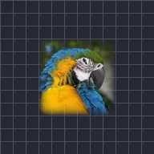

فیدر

لیئر کے الفا کناروں کو نرم کرتا ہے۔ 'اندر کی طرف' موجودہ آؤٹ لائن میں فیڈ ہوتا ہے؛ 'الفا بلر' نرم کنارے کو اس سے باہر بھی پھیلا دیتا ہے۔
فیزر لیئر کے کنارے کو نرم کرتا ہے۔ اسٹرینتھ بتاتی ہے کہ نرم کنارہ کتنا چوڑا ہے۔ ایجز یا تو انورڈ ہوتا ہے (کنارہ لیئر کے اندر کی طرف مٹتا ہے) یا بلر الفا (نرم کنارہ اصل آؤٹ لائن سے باہر بھی پھیلتا ہے)۔ صاف کٹ آؤٹ کے لیے اسے کرومیا کی کے بعد استعمال کریں۔
سیٹنگز
| سیٹنگ | قسم | رینج | ڈیفالٹ |
|---|---|---|---|
| شدت | نمبر | 0 سے 300 تک | 20 |
| کنارے | انتخاب | اندر کی طرف, الفا بلر | الفا بلر |